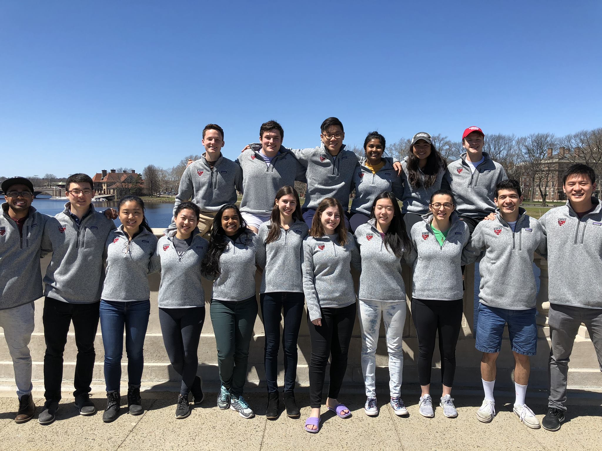

Harvard College Engineering Society
HCES

Harvard College Engineering Society (HCES) is the oldest engineering group on campus, serving as an umbrella organization to many groups such as WiCS, SWE, SHPE, NSBE, HURC, etc. As one of the largest organizations on campus, HCES has come a long way to become a prominent voice in the SEAS community to help students from mentorship (Big E & Little E, E-PAFs, course selection) tocareer development (resume reviews, resume book, tech talks, industry tours) to community (Welcome Kits, Field Day, Friday Lunches).
River Charles Ensemble
RCE

The River Charles Ensemble, Harvard’s premier conductor-less chamber orchestra, is dedicated to the highest quality of music-making and performance. Formed in the spring of 2012, the River Charles Ensemble is a community of musicians who believe in the power and application of chamber music techniques to solo and orchestral performances. Using a democratic and collective approach, the orchestra is dedicated to working with student musicians of all kinds and strongly believes in musical collaborations all across the Harvard community. The musicians of the River Charles Ensemble share a passion for this distinctive and innovative approach to music.
Harvard Korean International Students Association
KISA

HCKISA is concerned with the social and cultural issues regarding Korea and Koreans in this society. The organization seeks to:
- promote an understanding and appreciation of Korean culture,
- actively act as a liaison between organizations and institutions in Korea and the Korean international student community at Harvard.